Page 1: Room of Requirement - Dumbledore's Army
Decoy Detonators
Created by Weasleys' Wizard Wheezes, Decoy Detonators are used to create annoyingly loud, explosive diversions. When dropped, the Detonators walk away and then loudly explode, spewing putrid black smoke to distract anyone nearby.
Return to: Weasleys' Wizard Wheezes
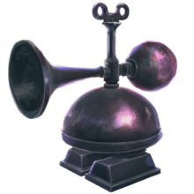
Hagrid's Umbrella
Forbidden from doing magic, it is rumoured that remnants of Hagrid's wand are concealed within his ever-present pink umbrella. Hagrid lost his privilege to do magic when he was expelled from Hogwarts and his wand was snapped in two.
Return to: Rubeus Hagrid
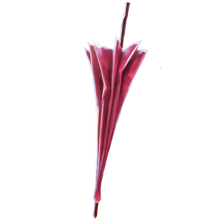
Quill of Acceptance and Book of Admittance
The Quill of Acceptance detects the birth of magical children, and records their names in the Book of Admittance; if the two agree. The book is later used by Hogwarts staff to admit new students to Hogwarts School of Witchcraft and Wizardry.
Return to: Hogwarts Headmaster's Office
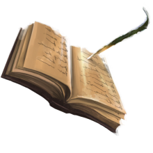
Remembrall
Though it appears as just a small glass ball, the Remembrall fills with bright red smoke to indicate to its owner that they have forgotten something of importance. It does not, however, remind the user what specifically has been forgotten.
Return to: Neville Longbottom
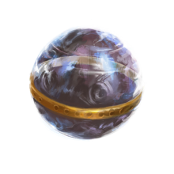
Weasley Clock
Instead of telling time, the Weasleys' Clock keeps track of the whereabouts of all the members of the Weasley family, including such locations as “work”, “school”, and “mortal danger”.
Return to: The Burrow
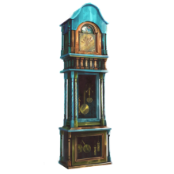
Page 2: Dumbledore's Office
Sword of Gryffindor
Made of pure Goblin's Silver, the Sword of Gryffindor is over 1000 years old. The sword makes itself available to true Gryffindors when needed and was used to dispatch Slytherin's Basilisk and the Maledictus, Nagini.
Return to: Hogwarts Headmaster's Office
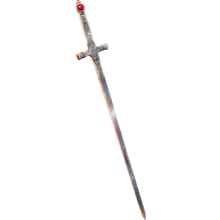
Pensieve
A Pensieve is a shallow basin filled with a cloud-like silvery substance where a wizard's memories can be stored, sifted through and examined in a perfect reproduction of the memory.
Return to: Hogwarts Headmaster's Office
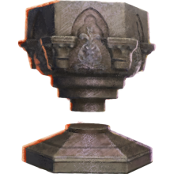
Dumbledore's Memory Cabinet
Hogwarts Headmaster Albus Dumbledore kept his Pensieve out of sight in this Memory Cabinet. It was used by Dumbledore and Harry Potter to view various memories, including those of Professor Slughorn and his interactions with the young Tom Riddle.
Return to: Hogwarts Headmaster's Office
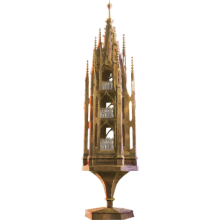
Philosopher's Stone
Created by Nicolas Flamel, the Philosopher's Stone is capable of indefinitely extending the lifespan of those who use it. The Stone was kept within Hogwarts for safe-keeping, until an attempt to steal it forced Flamel to destroy the Stone for good.
Return to: Nicolas Flamel, 1927
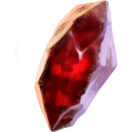
Mirror of Erised
The Mirror of Erised shows the deepest, most desperate desires of those who look into it. The visions within the mirror have been known to cause madness in those who could not separate what was real from what was not.
Return to: Hogwarts Third Floor Corridor, 1992
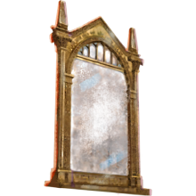
Page 3: Room of Requirement - Hidden Things
Sirius' Flying Motorbike
Sirius Black gave his flying motorbike to Rubeus Hagrid on the night Harry Potter's parents were killed. Hagrid used the bike to bring the newly orphanced infant to the Dursley's house at 4 Privet Drive.
Return to: Sirius Black, 1980
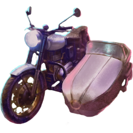
Hermione's Time-Turner
Time-Turners are magical objects that can send the wearer back in time. They are one of the most regulated magical objects in the wizarding world, as disturbing the natural order of time is remarkably dangerous and often has dire consequences.
Return to: Hermione Granger, 1993
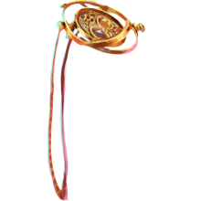
Cursed Opal Necklace
This Opal Necklace has a deadly curse placed upon it. The necklace has killed nineteen Muggles, and badly injured a young witch, Katie Bell. Even barely touching the necklace can cause the curse to spread, sending its victims into agonizing pain.
Return to: Borgin and Burkes
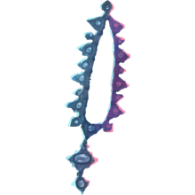
Mad-Eye Moody's Eye
The titular eye of Mad-Eye Moody is capable of seeing through anything, including solid wood and the back of his head. It was stolen by Dolores Umbridge following Moody's death and used to monitor her subordinates at the Ministry of Magic.
Return to: Alastor Moody, 1995
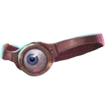
Marauder's Map
This enchanted map shows the entirety of Hogwarts, while also showing the location and identity of anyone walking through the grounds. It was created by the four Marauders - Sirius Black, James Potter, Remus Lupin, and Peter Pettigrew.
Return to: Harry Potter
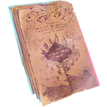